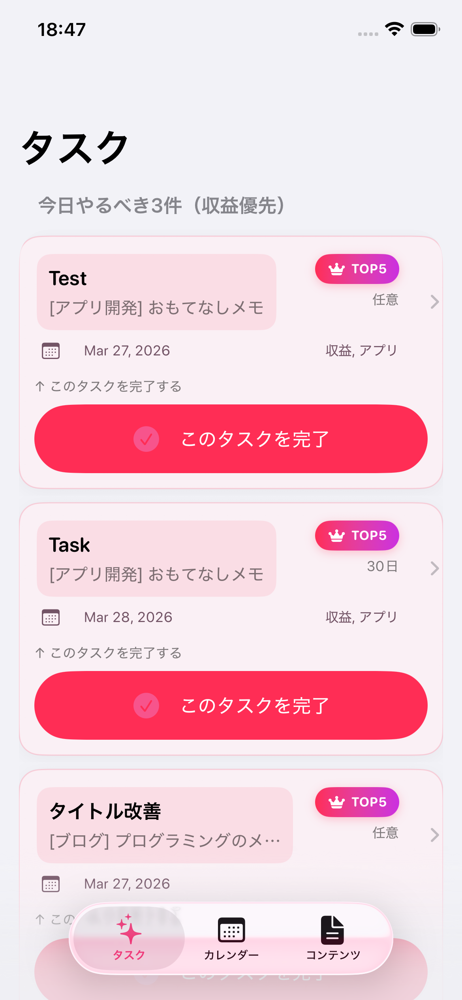
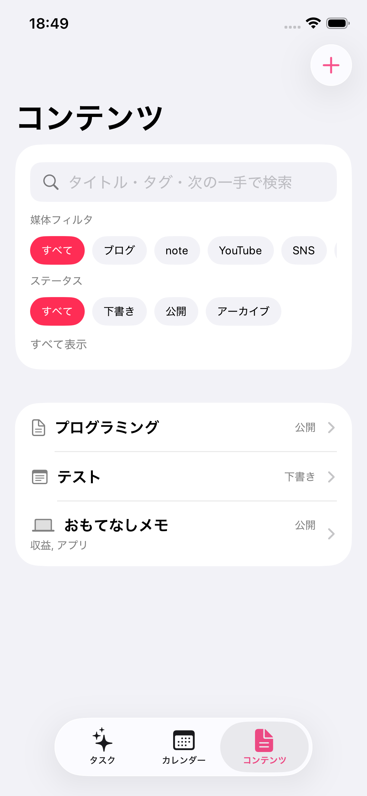
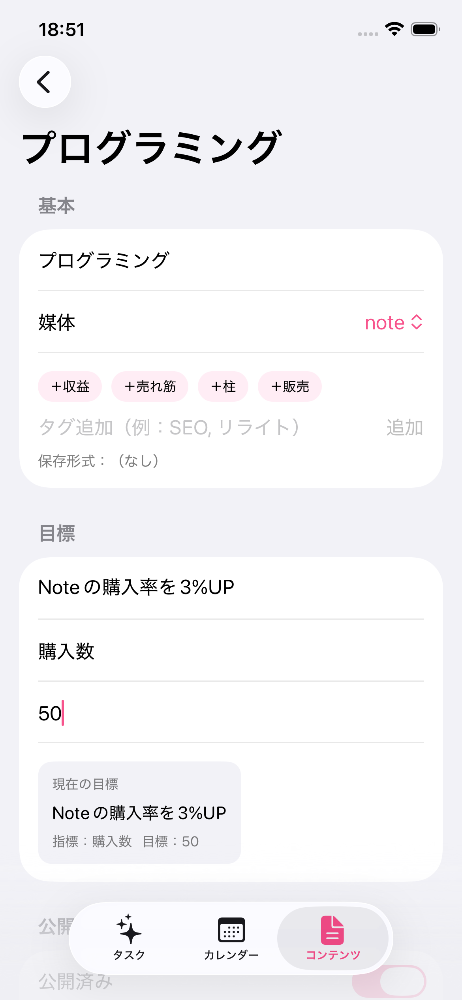

スクリーンショット
App Review 用の確認ページとして、主要画面を掲載しています。

コンテンツ一覧

詳細・改善ログ

設定・Pro機能
アプリ概要
のびログは、副業や発信活動で作成したコンテンツを継続的に改善するための管理アプリです。 コンテンツごとにURL、改善タスク、完了履歴、結果ログ、目標、売上・費用・利益を記録できます。
入力されたコンテンツ情報、URL、タスク、ログ、収益情報は、主に端末内で管理されます。
主な機能
- ブログ、note、YouTube、SNS、アプリ開発などのコンテンツ管理
- コンテンツごとのURL登録とURLを開くリンク表示
- 改善タスクの作成、編集、完了管理
- 結果ログの記録、最新ログ表示、履歴表示
- 目標、比較指標、目標値の登録
- タイトル、タグ、次の一手、URLによる検索
- 月別の売上、費用、利益の集計表示
- 設定画面でのPro購入、購入復元、バージョン表示
現在の提供内容
現行バージョン
- 基本的なコンテンツ管理、改善タスク管理、結果ログ管理を利用できます
- コンテンツごとにURLを登録できます
- 月別収益合計を確認できます
- Pro機能として、収益管理などの追加機能を提供します
- アプリ内課金は Apple の StoreKit を使用します
- 現時点では広告表示はありません
このページは現行バージョンの説明に基づいています。
Pro機能について
- のびログ Pro は、アプリ内課金による追加機能です
- Pro購入後、コンテンツごとの売上・費用・利益の記録機能を利用できます
- 設定画面から購入および購入の復元ができます
- 購入状態はアプリ内で確認でき、購入済みの場合はPro機能が有効になります
決済は Apple の App Store / StoreKit を通じて行われます。開発者はクレジットカード番号などの決済情報を直接取得・保存しません。
App Review 向け補足
- 本ページはアプリの概要、サポート情報、課金機能、プライバシー方針を説明するためのものです
- Pro購入機能は、設定画面からアクセスできます
- 購入復元機能を提供しています
- アプリ内のバージョン情報にはビルド番号を表示していません
- 現時点で広告を表示する実装はありません
サポート
不具合報告やお問い合わせは、以下までご連絡ください。